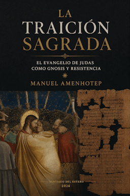
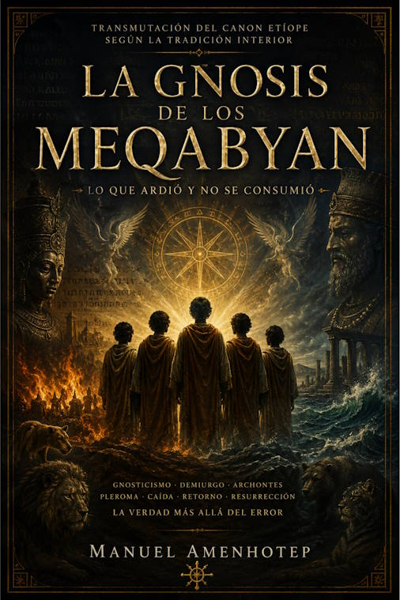
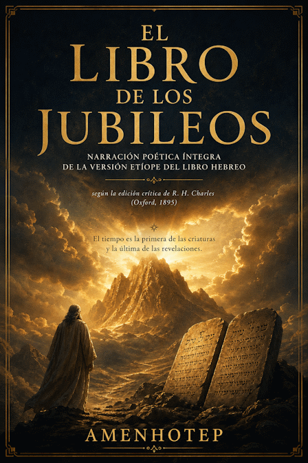
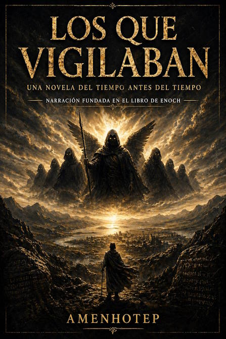

Biblioteca Gnóstica · 2026
La Traición Sagrada
El Evangelio de Judas como gnosis y resistencia.
Literatura, historia, filosofía, sociología y pensamiento. Un catálogo nacido en Santiago del Estero para leer el pasado, interrogar el presente e imaginar futuros.
Las incorporaciones más recientes al catálogo de Anitnegra Acilbuper, con especial atención a la nueva Biblioteca Gnóstica.

Ensayo sobre las tradiciones esotéricas y bíblicas etíopes de los Meqabyan, el fuego espiritual, la perseverancia y la preservación del conocimiento gnóstico frente a persecuciones e historias antiguas.

El Evangelio de Judas como gnosis y resistencia.

Narración poética íntegra inspirada en la versión etíope.

Una narración fundada en el Libro de Enoch.
Busque por título, autor o disciplina. El catálogo reúne narrativa, historia, sociología, filosofía y la Biblioteca Gnóstica, con ediciones digitales y enlaces de compra.
El autor como voz, investigador y creador. El catálogo crecerá alrededor de obras, no solo de nombres.
Anitnegra Acilbuper Editores nace con una vocación independiente: publicar obras cuidadas en su contenido y en su forma, preservando la voz de cada autor y acercando al lector textos capaces de producir pensamiento.
Rescatar experiencias, territorios y voces.
Hacer lugar a las preguntas difíciles.
Publicar para intervenir en el presente.
Una línea profesional para autores que necesitan convertir un manuscrito en una obra preparada para circular.
Revisión lingüística, estructural y acompañamiento del manuscrito hasta una versión final.
Portada, identidad visual, maquetación y preparación de archivos para publicación.
Preparación de ebooks, distribución y adaptación para plataformas de lectura.
Si tienes un manuscrito, una investigación, una novela o una propuesta editorial, puedes iniciar aquí la conversación.